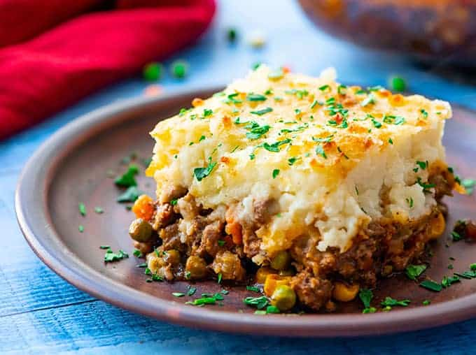
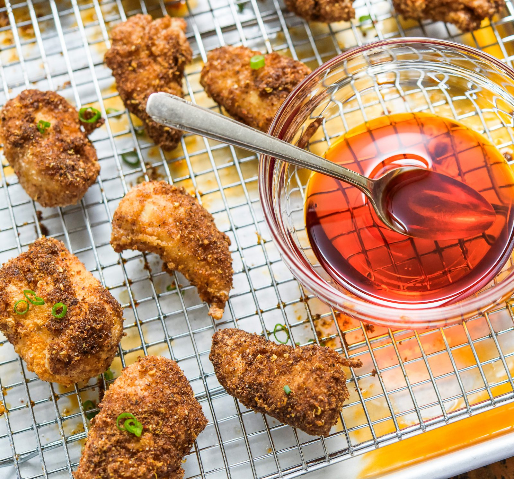
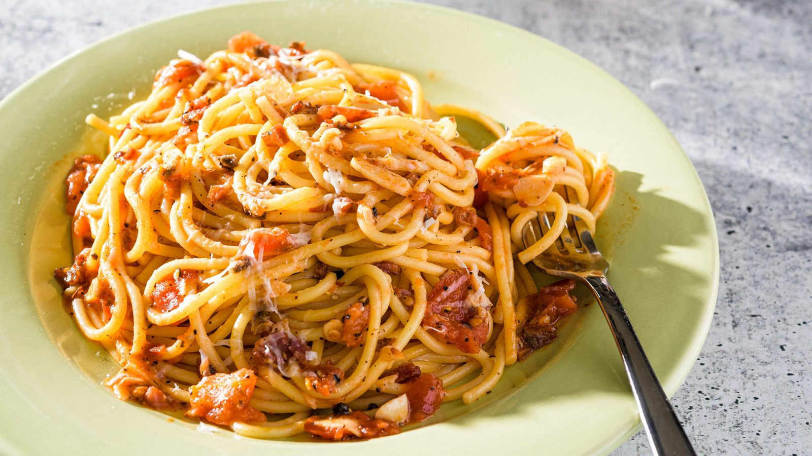
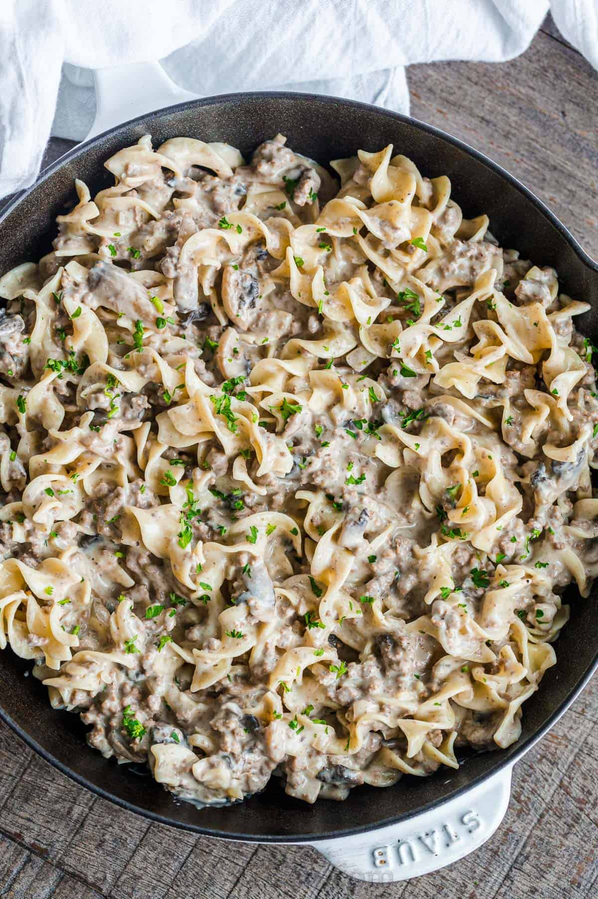
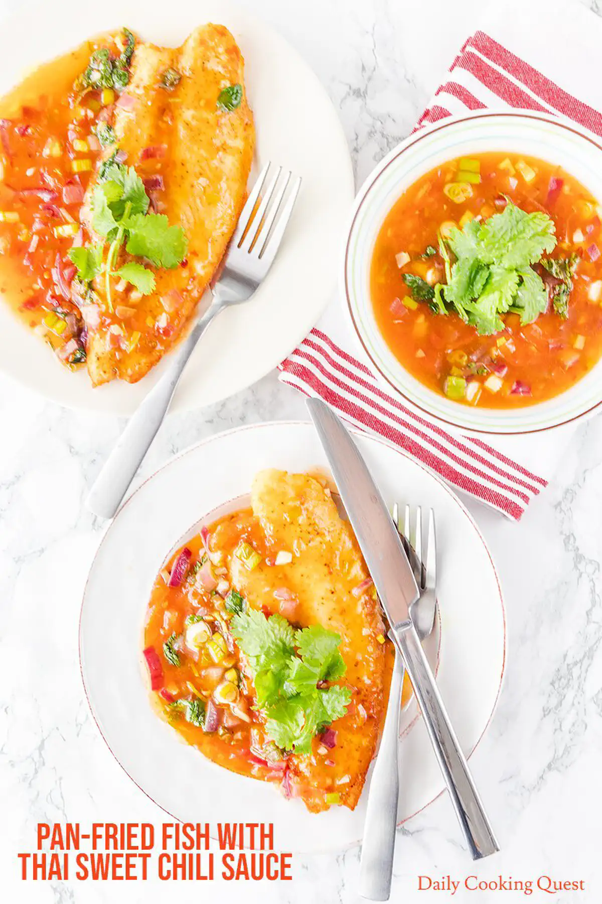
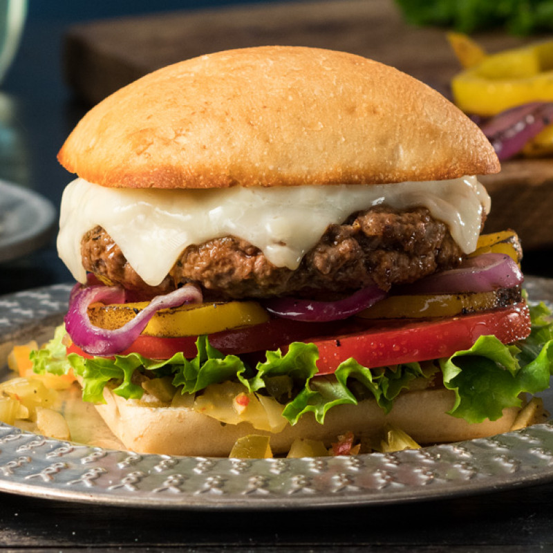

EasyRecipes
 ☰
☰
Chef John's Swedish Meatballs:

Chef John's Salmon:

Easy Meatloaf:

Spinach Tomato Tortellini:
Beef Stew VI:

Garlic Shrimp Linguine:
Curry Stand Chicken Tikka Masala:

Alfredo Sauce:

Just Like Wendy's Chili:

Grilled Chicken Breast:

Baked Sesame Chicken:

Chef John's Beef Goulash:

Seared Scallops:

Asian Coconut Rice:
Mongolian Beef:

Miso Ramen:

Chicken Fried Rice:
Beef Lo Mein:
Tonkatsu (Pork Cutlet):

Beef Hamburgers:

Maryland Crab Cakes:
Shepherd's Pie:

Tuscan Salmon:

Salt and Pepper Shrimp:
Sausage and Mushroom Ragu:
Orange Chicken:
Sesame Beef:

Poached Cod:

Crispy Sichuan-Chili Chicken:

Shanghai Fried Noodles:

Beef and Broccoli:

Pasta all' Amatriciana:

Lomo Saltado (Peruvian Beef):

Thai Rice Soup:

Beef Stroganoff:

Lemon Butter Cod:
Ginger Soy Steak:

Peanut-Guajillo Pork Chops:
Chicken Noodle Soup:
Orecchiette with Sausage:

Cilantro-Lime Shrimp:
Vietnamese Turmeric Fish:
Slow Cooked Spaghetti Sauce:

Snapper with Sweet-Chili Sauce:

Pappardelle with Bacon Cream Sauce:
Pan-Seared Chicken:
Italian Burgers:

Miso Black Cod:
Filet Mignon: